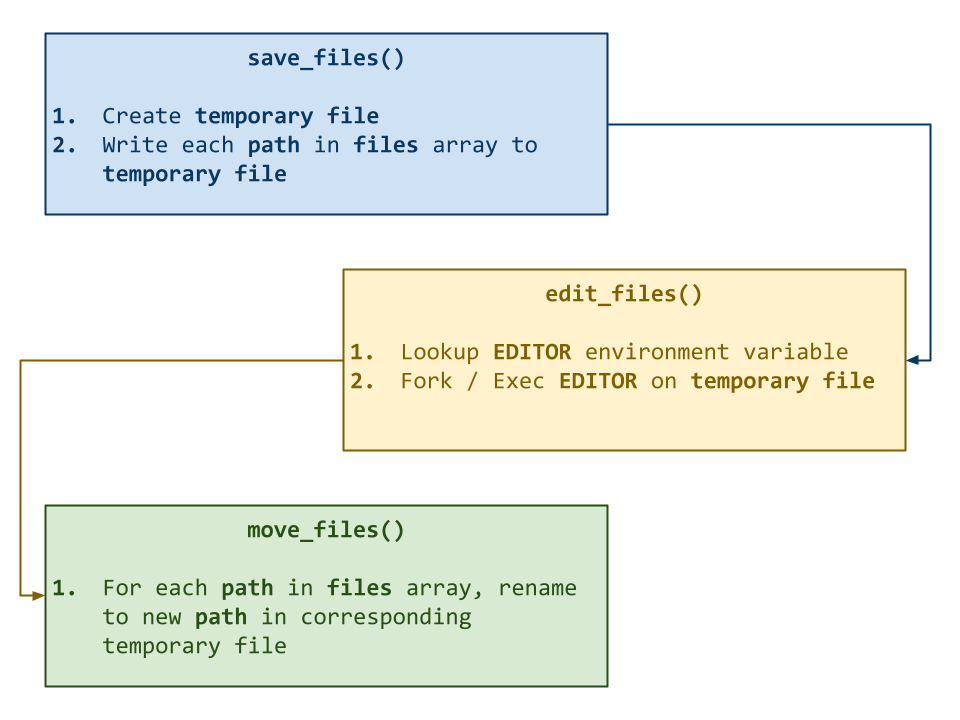
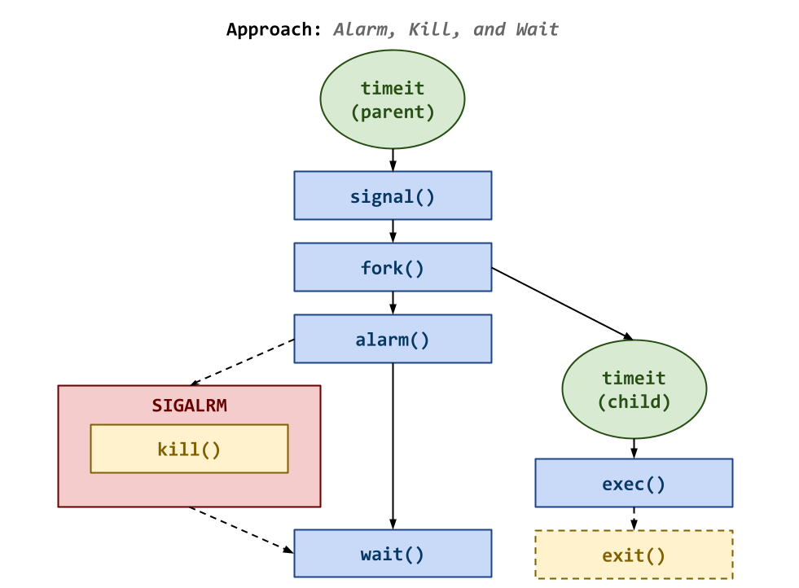

The goal of this homework assignment is to allow you to practice using
system calls involving processes and signals in C by
implementing two new Unix utilities: moveit and timeit.
-
moveit: The first utility allows users to interactively rename specified files using their favorite text$EDITOR. -
timeit: The second utility allows users to compute the elapsed time of an application while also enforcing a timeout (or cut off time).
Set us up the bomb (No!)¶
Be careful with the fork system call. To prevent a fork bomb, start off by always putting a sleep after a fork, that way you have time to kill the processes (you should eventually remove this sleep once you are confident your code is working).
If you still manage to create a fork bomb, do not simply go to another machine and run the same program. Notify the csehelp@nd.edu and explain what happened.
For this assignment, record your source code and any responses to the
following activities in the homework09 folder of your assignments
GitHub repository and push your work by noon Saturday, April 18.
Frequently Asked Questions¶
Activity 0: Preparation¶
Before starting this homework assignment, you should first perform a git
pull to retrieve any changes in your remote GitHub repository:
$ cd path/to/repository # Go to assignments repository
$ git switch master # Make sure we are in master branch
$ git pull --rebase # Get any remote changes not present locally
Next, create a new branch for this assignment:
$ git switch -c homework09 # Create homework09 branch and check it out
Task 1: Skeleton Code¶
To help you get started, the instructor has provided you with the following skeleton code:
# Go to homework09 folder
$ cd homework09
# Download Makefile
$ curl -LO https://pnutz.h4x0r.space/courses/cse.20289.sp26/static/txt/homework09/Makefile
# Download C skeleton code
$ curl -LO https://pnutz.h4x0r.space/courses/cse.20289.sp26/static/txt/homework09/moveit.c
$ curl -LO https://pnutz.h4x0r.space/courses/cse.20289.sp26/static/txt/homework09/timeit.c
Once downloaded, you should see the following files in your homework09
directory:
homework09
\_ Makefile # This is the Makefile for building all the project artifacts
\_ moveit.c # This is the moveit utility C source file
\_ timeit.c # This is the timeit utility C source file
Task 2: Initial Import¶
Now that the files are downloaded into the homework09 folder, you can
commit them to your git repository:
$ git add Makefile # Mark changes for commit
$ git add *.c
$ git commit -m "Homework 09: Initial Import" # Record changes
Task 3: Functional Tests¶
After downloading these files, you can run make test to run the tests.
# Run all tests (will trigger automatic download)
$ make test
You will notice that the Makefile downloads these additional test data and scripts:
homework09
\_ moveit.test.sh # This is the moveit utility test shell script
\_ timeit.test.sh # This is the timeit utility test shell script
You will be using these functional tests to verify the correctness and behavior of your code.
Automatic Download¶
The test scripts are automatically downloaded by the Makefile, so any
modifications you do to them will be lost when you run make again. Likewise,
because they are automatically downloaded, you do not need to add or commit
them to your git repository.
Task 4: Makefile¶
The Makefile contains all the rules or recipes for building the
project artifacts (e.g. moveit, timeit):
CC= gcc
CFLAGS= -Wall -std=gnu99 -g
TARGETS= moveit timeit
all: $(TARGETS)
#------------------------------------------------------------------------------
# TODO: Add rules for moveit, timeit
#------------------------------------------------------------------------------
moveit:
timeit:
#------------------------------------------------------------------------------
# DO NOT MODIFY BELOW
#------------------------------------------------------------------------------
...
For this task, you will need to add rules for building moveit and timeit
executables (you do not need to make any intermediate object files).
Makefile Variables¶
You must use the CC, CFLAGS variables when appropriate in your
rules. You should also consider using automatic variables such as
$@ and $< as well.
Once you have a working Makefile, you should be able to run the following commands:
# Build all TARGETS
$ make
gcc -Wall -std=gnu99 -g -o moveit moveit.c
gcc -Wall -std=gnu99 -g -o timeit timeit.c
# Run all tests
$ make test
Testing moveit...
...
Testing timeit...
...
# Remove generated artifacts
$ make clean
Note: The tests will fail if you haven't implemented all the necessary functions appropriately.
Compiler Warnings¶
You must include the -Wall flag in your CFLAGS when you compile. This
also means that your code must compile without any warnings, otherwise
points will be deducted.
Activity 1: moveit (0.40 Points)¶
For the first activity, write a program, moveit, that reads in filenames
from the command line arguments, stores them to a temporary file, opens an
$EDITOR on the temporary file, allows the user to modify the filenames, and
then renames the files based on the information in the temporary file:

The functionality of moveit is demonstrated below:
Note: Your program must remove the temporary file with the unlink system call.
Task 1: moveit.c¶
To implement the moveit utility, you are to complete the provided
moveit.c source file which contains the following macros and
functions:
Macros¶
#define streq(a, b) (strcmp(a, b) == 0)
##define strchomp(s) (s)[strlen(s) - 1] = 0
Functions¶
/**
* Display usage message and exit.
* @param status Exit status.
**/
void usage(int status);
This provided
usagefunction displays the help message and terminates the process with the specifiedstatuscode.
/**
* Save list of file paths to temporary file.
* @param files Array of path strings.
* @param n Number of path strings.
* @return Newly allocated path to temporary file.
**/
char * save_files(char **files, size_t n);
This
save_filesfunction writes each of the files specified in thefilesarray to a temporary file (one file per line) and returns the path of this temporary file.
Hint: Use mkstemp to create a temporary file and fdopen to convert the file descriptor into a stream.
/**
* Run $EDITOR on specified path.
* @param path Path to file to edit.
* @return Whether or not the $EDITOR process terminated successfully.
**/
bool edit_files(const char *path);
This
edit_filesfunction executes the users$EDITORon the specified file and returns the exit status of the$EDITORprocess.
Hint: Use getenv to read $EDITOR from your process environment
(fall back to vim, nano, or emacs if the environment variable does
not exist).
Fork It!¶
For this assignment, you must use low-level system calls for processes such as fork, exec, wait, and kill.
/**
* Rename files as specified in contents of path.
* @param files Array of old path names.
* @param n Number of old path names.
* @param path Path to file with new names.
* @return Whether or not all rename operations were successful.
**/
bool move_files(char **files, size_t n, const char *path);
This
move_filesfunction renames old files specified in thefilesarray with the new names contained in thepathfile (ie.files[0]corresponds to the first line inpath).
Hint: Use rename to move files only if the names are different.
Failure is an Option¶
You must check if the system calls you use fail and handle those situations appropriately.
Task 2: Testing¶
Once you have implemented moveit, you can test it by running the
test-moveit target:
$ make test-moveit
Testing moveit...
system calls ... Success
usage ... Success
usage (no arguments) ... Success
deadpool spidey rogue -> deadpool spidey rogue ... Success
deadpool spidey rogue -> deadpool spidey rogue (vim) ... Success
deadpool spidey rogue -> deadpool spidey rogue (nano) ... Success
deadpool spidey rogue -> deadpool spidey rogue (emacs) ... Success
deadpool spidey rogue -> deadpool spidey rogue (FAKE) ... Success
deadpool spidey rogue -> batman superman wonderwoman ... Success
deadpool spidey rogue -> batman superman wonderwoman (FAKE) ... Success
batman superman wonderwoman -> deadpool batman rogue ... Success
batman superman wonderwoman -> deadpool batman rogue (FAKE) ... Success
batman superman -> deadpool spidey rogue ... Success
batman superman -> deadpool spidey rogue (FAKE) ... Success
deadpool spidey rogue -> batman superman ... Success
deadpool spidey rogue -> batman superman (FAKE) ... Success
doom -> thing ... Success
doom -> thing (rm) ... Success
doom -> thing (false) ... Success
--------------------
Score 19.00 / 19.00
Grade 1.00 / 1.00
Status Success
Activity 2: timeit (0.4 Points)¶
For the second activity, write a program, timeit, that executes the given
command until a timeout is reached or the program terminates as show below:
If the verbose mode is enabled, your timeit should display the following
sort of debugging messages:
$ ./timeit -v
timeit.c:68:parse_options: Timeout = 10
timeit.c:69:parse_options: Verbose = 1
Usage: timeit [options] command...
Options:
-t SECONDS Timeout duration before killing command (default is 10)
-v Display verbose debugging output
$ ./timeit -t 5 -v sleep 1
timeit.c:68:parse_options: Timeout = 5
timeit.c:69:parse_options: Verbose = 1
timeit.c:85:parse_options: Command = sleep 1
timeit.c:116:main: Registering handlers...
timeit.c:119:main: Grabbing start time...
timeit.c:137:main: Sleeping for 5 seconds...
timeit.c:139:main: Waiting for child 160815...
timeit.c:131:main: Executing child...
timeit.c:145:main: Child exit status: 0
timeit.c:148:main: Grabbing end time...
Time Elapsed: 1.0
$ ./timeit -t 1 -v sleep 2
timeit.c:68:parse_options: Timeout = 1
timeit.c:69:parse_options: Verbose = 1
timeit.c:85:parse_options: Command = sleep 2
timeit.c:116:main: Registering handlers...
timeit.c:119:main: Grabbing start time...
timeit.c:137:main: Sleeping for 1 seconds...
timeit.c:139:main: Waiting for child 160841...
timeit.c:131:main: Executing child...
timeit.c:101:handle_signal: Killing child 160841...
timeit.c:145:main: Child exit status: 9
timeit.c:148:main: Grabbing end time...
Time Elapsed: 1.0
Note: If the time limit is exceeded, the parent should kill the child and wait for it. Moreover, the parent should always return the child's exit status as its own exit status.
Task 1: timeit.c¶
To implement the timeit utility, you are to complete the provided
timeit.c source file which contains the following macros and
functions:
Macros¶
#define debug(M, ...) \
if (Verbose) { \
fprintf(stderr, "%s:%d:%s: " M, __FILE__, __LINE__, __func__, ##__VA_ARGS__); \
}
This
debugmacro displays the specified formatted message only if theVerboseglobal variable istrue. The message includes the name of the file, the line number, and the function at which the macro is called.
Functions¶
/**
* Display usage message and exit.
* @param status Exit status.
**/
void usage(int status);
This provided
usagefunction displays the help message and terminates the process with the specifiedstatuscode.
/**
* Parse command line options.
* @param argc Number of command line arguments.
* @param argv Array of command line argument strings.
* @return Array of strings representing command to execute.
**/
char ** parse_options(int argc, char **argv);
This
parse_optionsfunction processes the command line arguments by setting theTimeoutandVerboseglobal variables and by constructing an array of strings to represent the specifiedcommand.
/**
* Handle signal.
* @param signum Signal number.
**/
void handle_signal(int signum);
This provided
handle_signalfunction kills the child process whenever aSIGALRMis invoked.
Main Execution¶
The main logic for timeit will be in the main function. While there are
multiple approaches on how to accomplish the task of running a program with a
time limit, the recommended method is shown below:

In this approach, the main function first registers the signal_handle
function for SIGALRM using signal. Then the parent process performs a
fork and the child process executes the specified command using one of
the exec variants.
After the fork, the parent process sets an alarm based on the specified
Timeout. It then simply calls wait. If the alarm triggers, then the
handler should kill the child process. Otherwise, if the child terminates
before the Timeout then the parent cancels the alarm and completes its
wait to retrieve the child's exit status.
To measure the elapsed time, you must use the clock_gettime function with
the CLOCK_MONOTONIC clock identifier.
Task 2: Testing¶
Once you have implemented timeit, you can test it by running the
test-timeit target:
$ make test-timeit
system calls ... Success
usage (-h) ... Success
usage (no arguments) ... Success
usage (-v, no command) ... Success
usage (-t 5 -v, no command) ... Success
sleep ... Success
sleep 1 ... Success
-v sleep 1 ... Success
-t 5 -v sleep 1 ... Success
sleep 5 ... Success
-v sleep 5 ... Success
-t 1 sleep 5 ... Success
-t 1 -v sleep 5 ... Success
-v find /etc -type f ... Success
-t 5 -v /tmp/timeit.1000/TROLL ... Success
--------------------
Score 15.00 / 15.00
Grade 1.00 / 1.00
Status Success
Activity 4: Quiz (0.2 Points)¶
Once you have completed all the activities above, you are to complete the following reflection quiz:
As with Reading 01, you will need to store your answers in a
homework09/answers.json file. You can use the form above to generate the
contents of this file, or you can write the JSON by hand.
To test your quiz, you can use the check.py script:
$ ../.scripts/check.py
Checking homework09 quiz ...
Q01 4.00 / 4.00
Q02 2.00 / 2.00
Q03 1.00 / 1.00
Q04 1.00 / 1.00
Q05 1.00 / 1.00
Q06 1.00 / 1.00
--------------------
Score 10.00 / 10.00
Grade 1.00 / 1.00
Status Success
Submission¶
To submit your assignment, please commit your work to the homework09 folder
of your homework09 branch in your assignments GitHub repository.
Your homework09 folder should only contain the following files:
Makefileanswers.jsonmoveit.ctimeit.c
Note: You do not need to commit the test scripts because the Makefile
automatically downloads them.
#-----------------------------------------------------------------------
# Make sure you have already completed Activity 0: Preparation
#-----------------------------------------------------------------------
...
$ git add Makefile # Mark changes for commit
$ git add moveit.c # Mark changes for commit
$ git commit -m "Homework 09: moveit" # Record changes
...
$ git add Makefile # Mark changes for commit
$ git add timeit.c # Mark changes for commit
$ git commit -m "Homework 09: timeit" # Record changes
...
$ git add answers.json # Mark changes for commit
$ git commit -m "Homework 09: quiz" # Record changes
...
$ git push -u origin homework09 # Push branch to GitHub
Acknowledgments¶
If you collaborated with any other students, or received help from TAs or AI
tools on this assignment, please record this support in the README.md in
the homework09 folder and include it with your Pull Request.
Graders¶
Once you have committed your work and pushed it to GitHub, remember to create a pull request and assign it to the appropriate teaching assistant from the Reading 09 TA List.
Note: this list changes each week, so be sure to consult the appropriate list for each assignment.